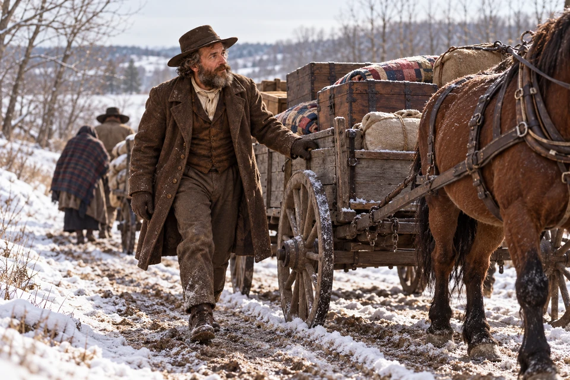
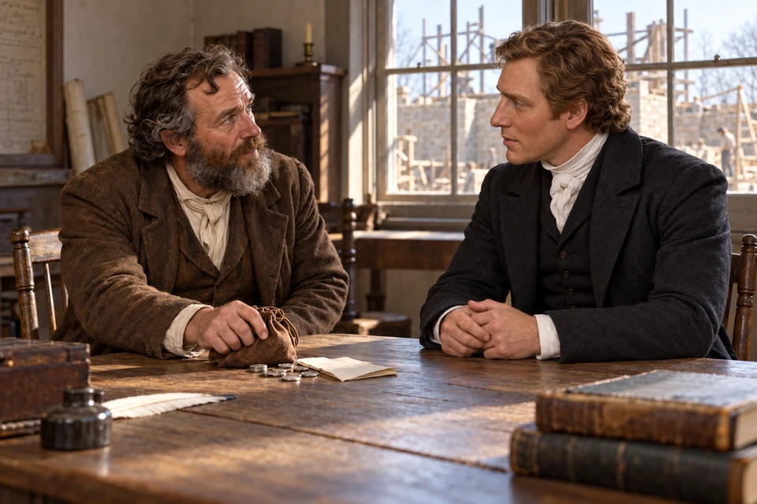
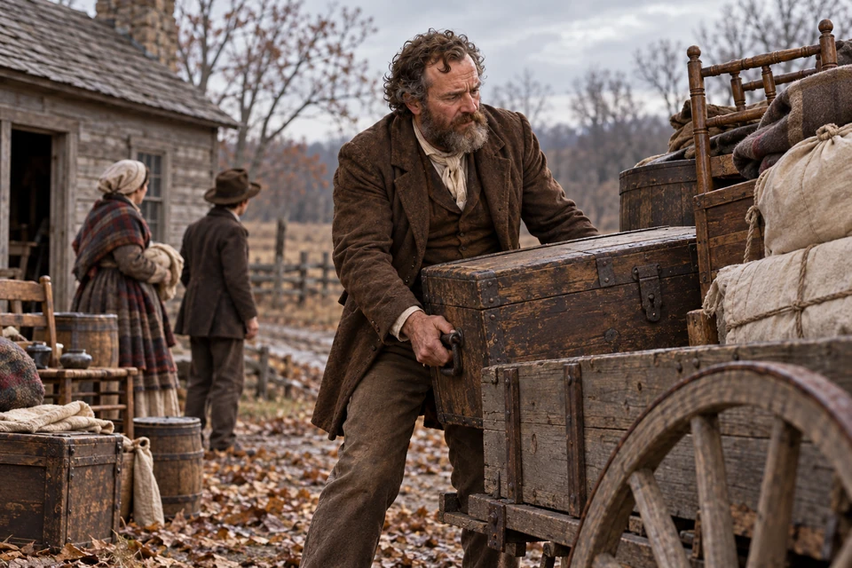
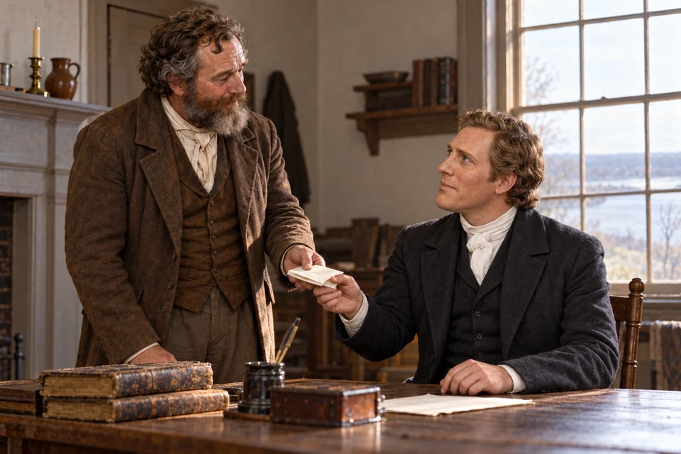
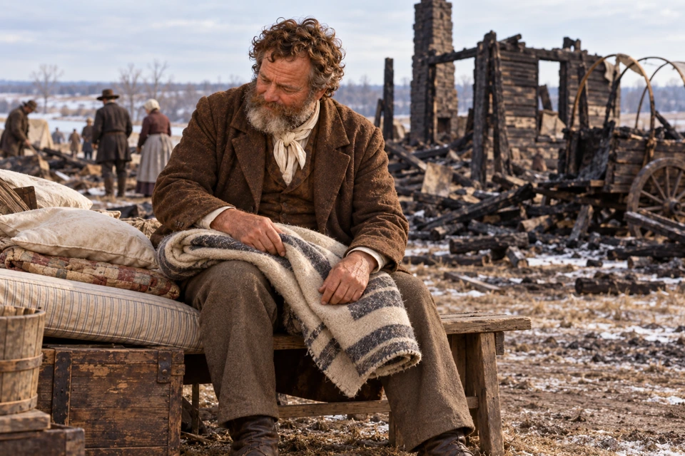
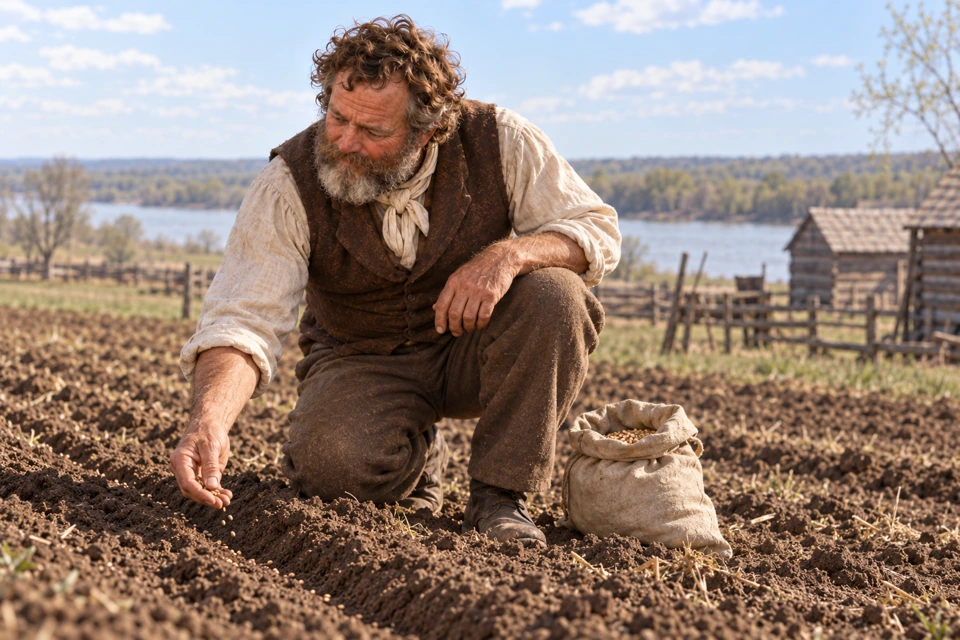
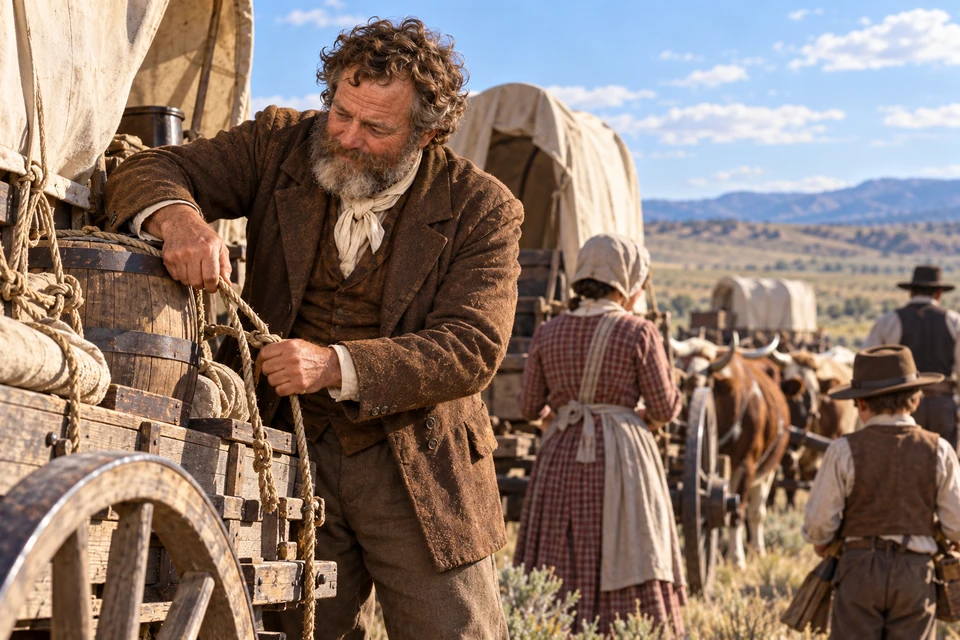

Church film · Dramatization · 20:31
Watch Treasure in Heaven: The John Tanner Story
Film and preview: The Church of Jesus Christ of Latter-day Saints
Jared Carter reported taking Tanner’s hand and inviting him to walk in the name of Jesus Christ. This scene gives a visual telling of Carter’s account.
Jared Carter’s account of John Tanner John Tanner: Joseph Smith Papers Jared Carter’s journal: typescript, page 19
Before John Tanner became known for what he gave, he needed help himself. At fifty-four, he could not bear his weight on one foot. Jared Carter found that the man before him already believed in the Book of Mormon. He asked Tanner to try walking in the name of Christ. Tanner agreed. Carter’s journal remembers the next moment simply: “I then took him by the hand.” In Carter’s account, Tanner was enabled to walk through the power of Christ.
That offered hand belongs at the beginning of Tanner’s story. His faith grew from receiving as well as giving. Carter also remembered his brother Simeon praying elsewhere while he was with Tanner. Tanner was baptized at Bolton Landing on September 17, 1832. The man who had been unable to put weight on his foot would soon begin a journey that carried his household far beyond New York.

The household travels toward Kirtland.
January 1835 minutes and Tanner family recollections Scraps of Biography (1883): later account of John Tanner
Tanner had more than money to leave behind in New York. His son Nathan remembered mills, houses, barns and abundant orchards. Selling property meant loosening his hold on an established way of life. Joseph Smith Papers editors trace several sales across 1833 and 1834, rather than one hurried sale of everything. A later account says that, in December 1834, Tanner felt impressed to go to Kirtland without waiting until spring.
On Christmas Day the household began its journey west. The 1883 account remembers neighbors trying to dissuade him and a winter journey of about five hundred miles. They reached Kirtland in January. There Tanner learned of the money needed for the temple land and lent Joseph Smith $2,000. The note he received would remain part of his story for years.

Tanner meets with Joseph Smith beside ordinary papers.
Scraps of Biography (1883): later account of John Tanner John Tanner: Joseph Smith Papers Doctrine and Covenants 109:1–5: the dedication prayer
The loan for the land was only part of Tanner’s help. The later account describes merchandise supplied to the temple committee and his signature on another obligation for goods. These were practical contributions: things the builders could use and commitments for which Tanner could be held responsible. He also made donations as the work continued.
When the Kirtland Temple was completed, Tanner joined its dedication, according to the later account. Doctrine and Covenants 109 preserves the prayer offered there: the Saints brought their poverty, labor and love before the Lord. Tanner could worship in the house he had helped build. The years that followed brought financial losses, including his investment in the Kirtland Safety Society. Giving generously had not made his family immune to hardship.

Tanner’s family moved through Missouri hardship and into Illinois. Packed belongings bring the work of leaving and beginning again into view.
Scraps of Biography (1883): later account of John Tanner John Tanner: Joseph Smith Papers
The journey to Missouri brought Tanner’s family into need. The 1883 narrative recalls borrowed equipment and occasions when they asked people along the road for food. It also remembers a daughter dying during the journey. Later that year, while returning from a mill with his son Myron, Tanner saw armed men approaching and sent the boy to hide. Myron escaped into brush; his father was struck in the head and taken prisoner.
For the family, persecution meant more than losing a place on a map. It meant finding one another again and beginning the work of feeding a household after another move. They left Missouri in 1839, stopped at New Liberty, and settled near Montrose in 1840. Across the river from Nauvoo, Tanner farmed again and helped with another temple. The family account follows him through both the hurt and the ordinary work of starting over.

A returned note recalls the gift remembered in Tanner’s family account.
Before leaving on his mission in 1844, Tanner met Joseph Smith in Nauvoo. In the later account, he handed back the note for the $2,000 lent in Kirtland. Joseph asked what he wanted done with it. Tanner answered, “Brother Joseph, you are welcome to it.” He offered the note as a gift.
The account remembers Joseph placing a hand on Tanner’s shoulder and blessing him and his children. The note had accompanied years of temple building, financial loss and another move west. Tanner now handed it back without asking for payment. His family preserved the exchange as one of the ways they remembered his generosity.
Tanner speaks with his companion on the road. Pettegrew recorded their missionary travels in 1844.
David Pettegrew’s December 1844 mission report: Times and Seasons
At sixty-five, Tanner set out with David Pettegrew. Pettegrew’s December 1844 report follows them by river to Pittsburgh and then on foot for 240 miles to Buffalo, preaching whenever they had an opportunity. On the boat toward Troy, fellow passengers arranged for preaching in the cabin. Their work unfolded among people who welcomed them, listened, argued or asked for baptism.
Then news of Joseph and Hyrum Smith’s deaths reached them in the East. Pettegrew wrote, “We hardly knew what to do, or how to act, for a while.” Eventually they decided to visit the people they knew, bear testimony and travel west, continuing to speak along the way.
John Tanner watches over cattle near the emigrants' camp.
Leaving the Nauvoo area in 1846, Tanner helped pay the way for two other families as well as his own, according to the 1883 account. Near Winter Quarters, he tended the community’s livestock for three months. Before another westward journey, the animals needed daily care. His service included ordinary work that helped a camp carry on.

Tanner sits beside bedding saved from the fire.
In January 1847, fire took Tanner’s home, wagon boxes used as sleeping rooms, and much of the household’s provisions and clothing. The later account records that beds and some bedding survived.

Tanner works a new field in the spring after the fire.
The account next finds Tanner helping outfit the pioneers and starting another farm. He raised a crop that year. After the fire, there was ground to work and another season to prepare for before his household crossed the plains in 1848.

Preparing supplies for the road, Tanner joins the westward journey with his family in 1848.
Scraps of Biography (1883): later account of John Tanner John Tanner: Church History Biographical Database
In 1848 he brought his household west in the Willard Richards company. They settled in South Cottonwood, where Tanner spent the last part of his life. He died on April 13, 1850. The surviving accounts leave us with more than a list of donations: a man accepting help, protecting his child, returning to work after loss, and making room on the journey for others. His story invites a quiet question about the people we can help with the strength and means we have today.
Church film · Dramatization · 20:31
Film and preview: The Church of Jesus Christ of Latter-day Saints
When has receiving help changed the way you give?
What responsibilities remain with the person who gives generously?
What does it mean to release a claim rather than keep it?